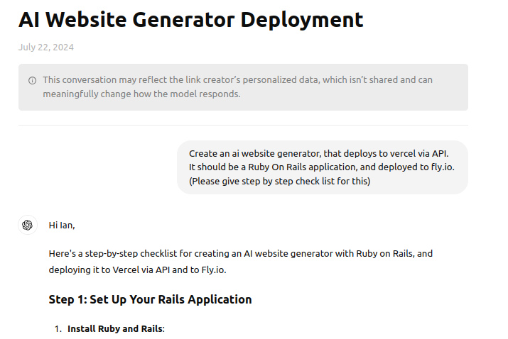

ChatGPT Thread 
We move the Trello card with checklist, to a seperate column, with each checklist item being a seperate card. Then we can add more details through adding a comment to the card, and we can add a checklist to the new card.